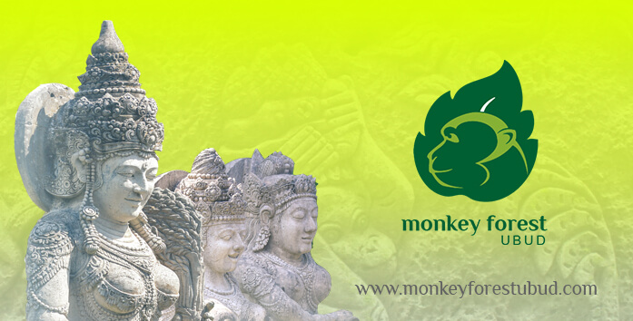
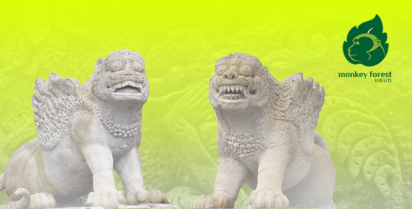
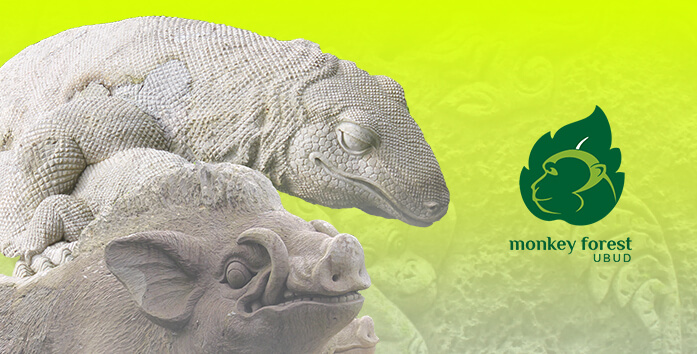
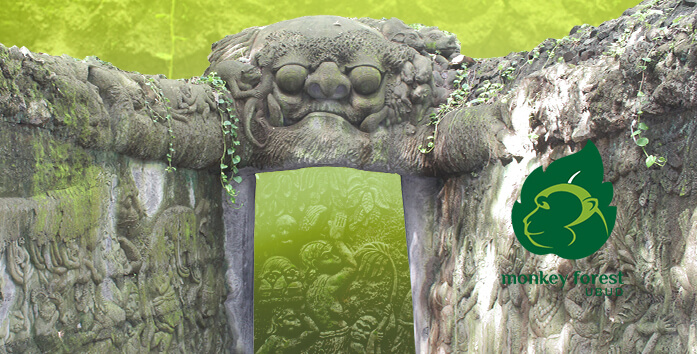
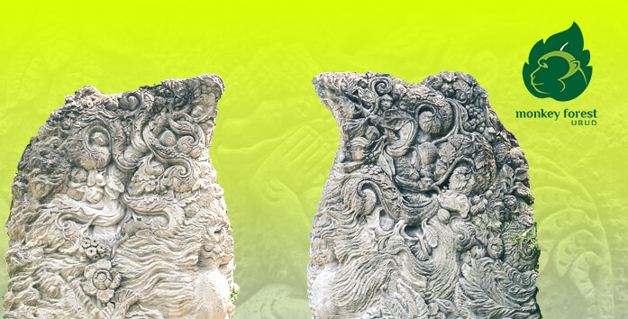

The Concept of The Statues and Sculptures in Lobby Area
The Statue of Goddess of Sri
The Statue of Goddess of Sri (Sri Devi) holding paddy, is placed on the west side of lobby that accompanied by angles in shape of Apsari. The Apsari’s statue are manifested by the three statues of fountain on the north side of Yoni Pool that giving bless of Fertility to the world. By abundant milk of life and beauty smile will guaranteed the result of harvest.

Goddess of Dhurga
Goddess of Dhurga (Dhurga Devi) well know by having many manifestatioons and names that make her also referred as the mothher of Universe. Dhurga Devi has a mounts in shape of lion and tiger. The statue of tiger is placed on the north side of the lobby. It said Dhurga Devi mounted the ruler of the forest to slay Mahisasura (an evil that tried to destroy nirvana)

The aspect of four Brotherhood
The aspect of four brotherhood in Tutur Kandapat beside the other two above also takling shape in form of boar and komodo that placed in front of the lobby. These four statues are symbol of beast who welcomed a soul when they entered eternal realm on their first journey of afterlife. On the next journey the soul will run through titi ugal agil (vibrate brigde) that manifested by wooded bridge that relatively narrow and long until they faced batu terbelah (divided stone) that created based on candi bentar/ candi belah

Cave Called Durgama
The journey of the soul continue to a vace called Durgama. The word of Durgama Come from “Durga Mata-Ji” a term referred to worship Durga Devi. Durgama Cave represented in from of cave with sculptures and reliefs on it wall. There is a lingga statue inside the cave the cave as a symbol of God Shiva on his holiness abstract from and a relief of Durga Devi in her rage expression. On Entrance of Durgama Cave the are relief from Tantri Kamandaka, which is story of animals. Relief on the left side illustrated the process memendak (pick up), is a ritual procession to welcome the arrival of the Gods, which in this matter is the visitors. Relief on the right side illustrated the process of farewell, the process of escorting the guests to the way home after their visit. This fragment continue untul the exit gate of the cave inside the forest. There are also statue of Jro Gde and Jro Luh (Male and Female tall barong) that made in shape of square

Candi Terbelah
Candi Terbelah also symbolize a mountain with vas forest (flora) and animals (fauna). Biological of the mountain that also crafted in sculptures such as owl (the messanger of death), snakes to represent reptile and any other deadly beast
